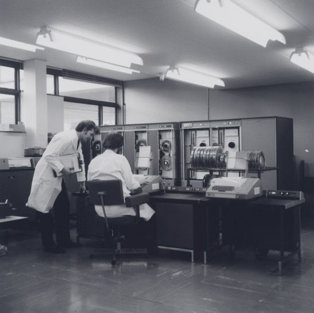
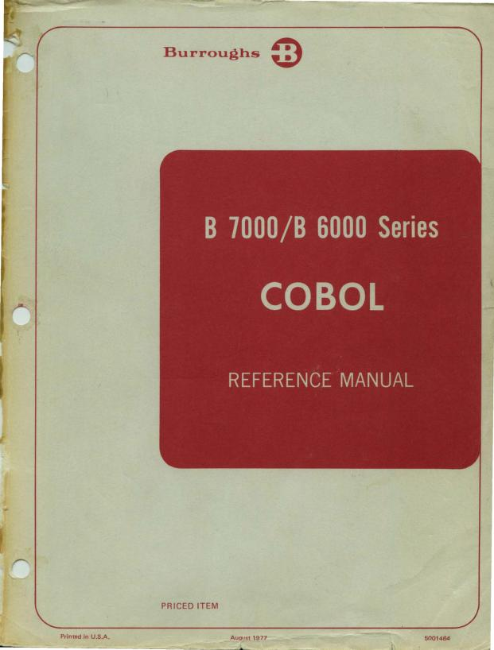

First TCS Contract



> Scroll to execute
To meet its exports obligation, TCS provided software services to Burroughs — migrating old mainframe software.
First job: converting a hospital accounting package from Medium Systems COBOL to Small Systems COBOL.
The contract was worth $24,000.
Engineers in Detroit sent manuals and code to Bombay.
Engineers in Bombay wrote a programme to translate the code.
It ran on an ICL mainframe — bought cheap from LIC after unions blocked its use.
This seeded TCS's model: develop in India, implement globally.
"That's how the Indian software industry was born — not by design, but by accident."
— S Ramadorai.
— S Ramadorai.